Write and Read Memory
Schematic Diagram of NOT Gate
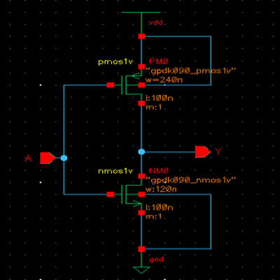
Symbol of NOT Gate
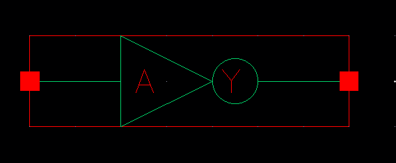
Schematic Diagram of NAND Gate
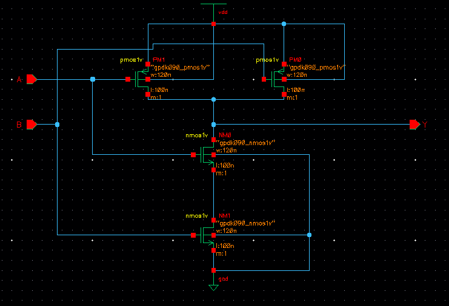
Symbol of NAND Gate
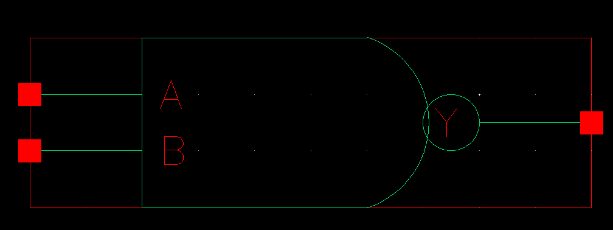
Making AND Gate using NAND Gate & NOT Gate
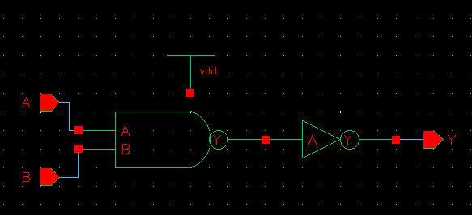
Symbol of AND Gate
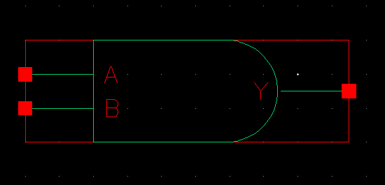
Schematic Diagram of OR Gate
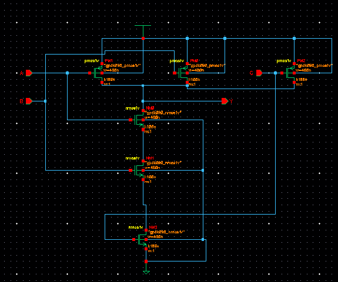
Symbol of OR Gate

Schematic Diagram of OR Gate
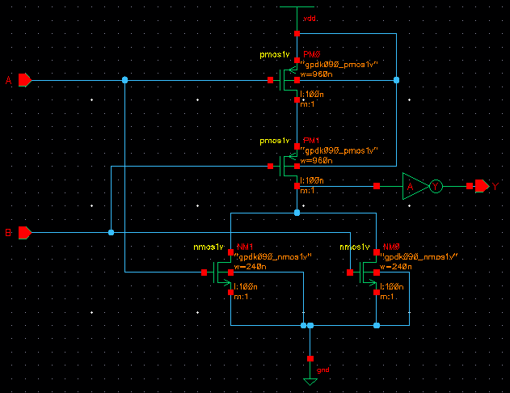
Symbol of OR Gate
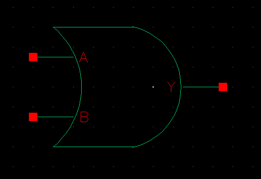
Schematic Diagram of D Latch
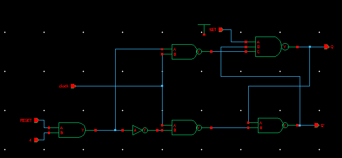
Symbol of D Flip-Flop (2 D Latches used)
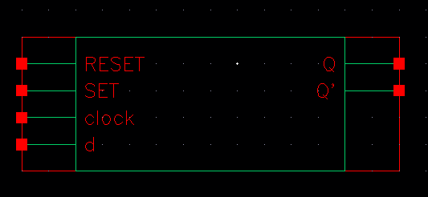
Schematic Diagram of D Latch
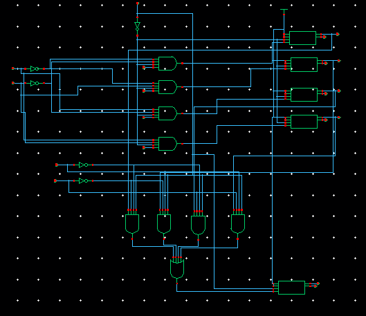
Symbol of D Flip-Flop (2 D Latches used)
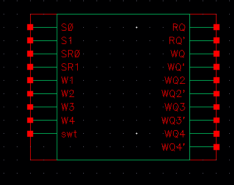
Schematic Diagram of 4 Bit Ring Counter
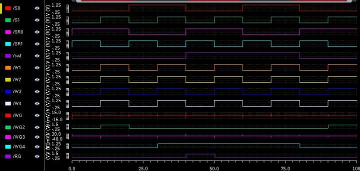
Schematic Diagram of D Latch
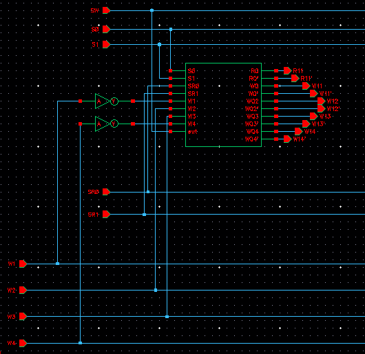
Symbol of D Flip-Flop (2 D Latches used)
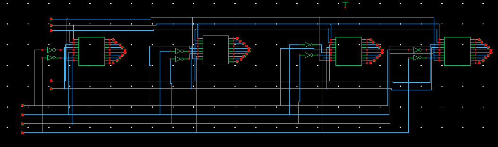
Output
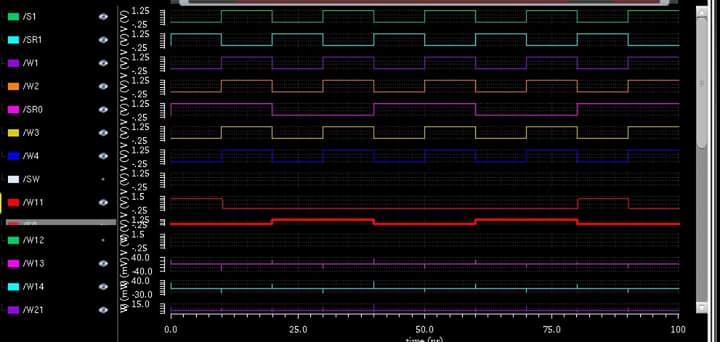
Schematic Diagram of 4 Bit Ring Counter
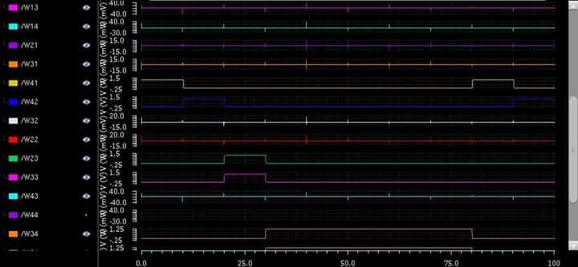
Output